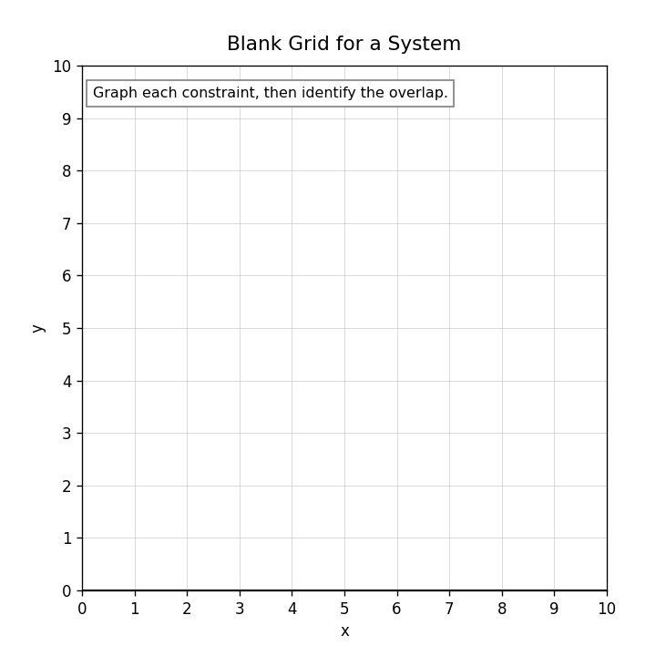
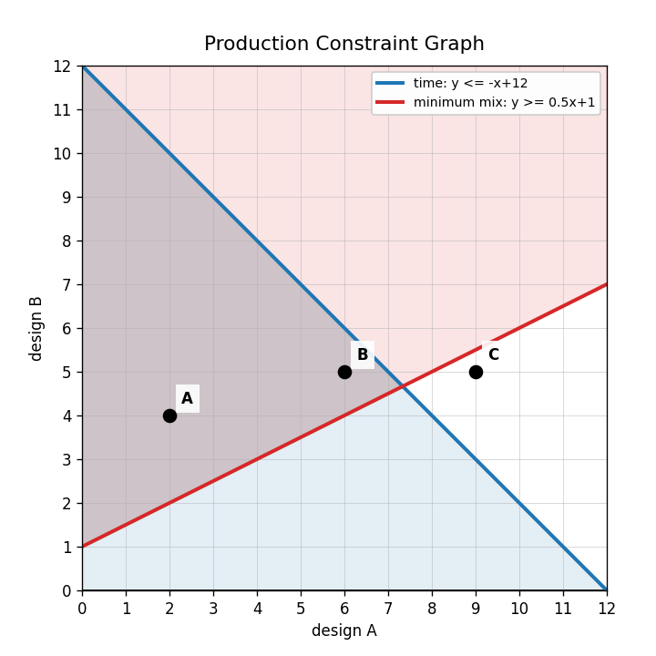
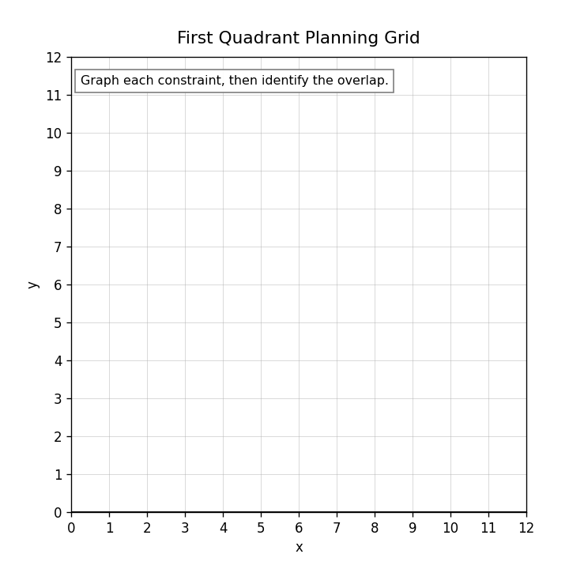

What does it mean for a point to satisfy all constraints?
Graph the system and identify the overlap.
$$y\le -x+10$$
$$y\ge 2$$

A student says the solution to a system of inequalities is always one ordered pair. Critique the statement.
Use the production graph. Choose one candidate point and justify whether it satisfies both constraints using the graph and inequalities.

For $x+y\le 12$, what boundary line should be graphed?
Does $(0,0)$ satisfy $x+y\le 12$? What does this tell you about shading?
Should $x+y<12$ have a solid or dashed boundary?
What does “at most 12 total items” mean as an inequality?
Rewrite $3x+2y\le 24$ by solving for $y$.
Graph $3x+2y\le 24$.

Explain why a point can be on the boundary line but not be included in the solution set.
Design an inequality whose graph is useful in a budget context. Include variable meanings and a boundary line.
In a production context, what might the variables $x$ and $y$ represent?
A team makes 20 total items. Write an equation with $x$ and $y$.
Explain why negative values usually do not make sense in a production or budget system.
When would an inequality model be more useful than an equation model? Use a real-world example.